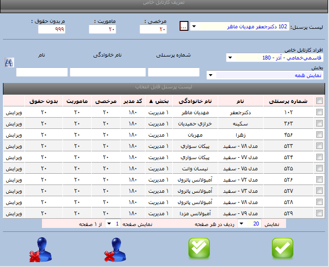

تعریف کارتابل خاص
کاربرد کارتابل خاص:
کارتابل خاص پرسنلی است که مدیر نیست ولی پرسنلی به عنوان حوزه دسترسی این نفر(کارتابل خاص) وجود دارند که درخواست این افراد وارد کارتابل این فرد می گردد ومی تواند(کارتابل خاص ) براساس سقف مجوزهای تعریف شده درخواست را تایید نماید.
نکته: تفاوت کارتابل خاص با مدیر این است که مدیر برای یک بخش انتخاب می شود ولی کارتابل خاص برای یک تعداد پرسنلی است که به آن فرد اختصاص داده شده و کارتابل خاص امکان تعریف جانشین و تفویض اختیار را نداردو فرد کارتابل خاص عملکردهای محدودی برای تایید دارد که شامل مرخصی -ماموریت-مرخصی بدون حقوق .

روش تعریف کارتابل خاص :
جهت تعریف پرسنل کارتابل خاص ابتدا از از منوی لیست پرسنل فرد کارتابل خاص را انتخاب نموده و سقف مرخصی ،ماموریت و مرخصی بدون حقوق را تعریف نموده و از قسمت لیست پرسنل قابل انتخاب نیز برای انتخاب چند نفر خاص گزینه ها را تیک بزنید وبا کلید فلش سبز رنگ(کلید ثبت)ذخیره نمایید.
برای انتخاب گروهی پرسنل تیک بالایی رازده وبا کلید سبز رنگ(ثبت همه)ذخیره نمایید.
سپس برای مشاهده عملیات انجام شده از قسمت افراد کارتابل خاص فرد مورد نظر را انتخاب می نمایید تا پرسنل کارتابل خاص به شما نمایش داده شود.
همانطور که در تصویر فوق مشاهده می نمایید برای تک تک افراد کد مدیر انتخابی وتعداد مرخصی و ماموریت ومرخصی بدون حقوق مشخص شده است که با کلید ویرایش قابل ویرایش نیز می باشد.